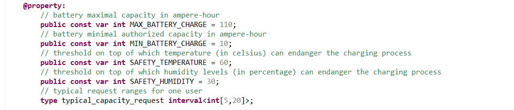
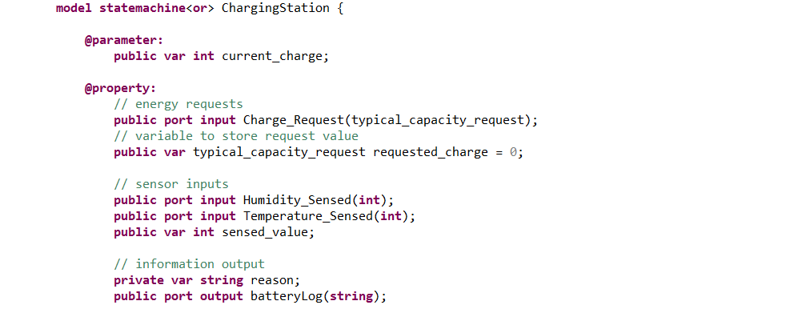
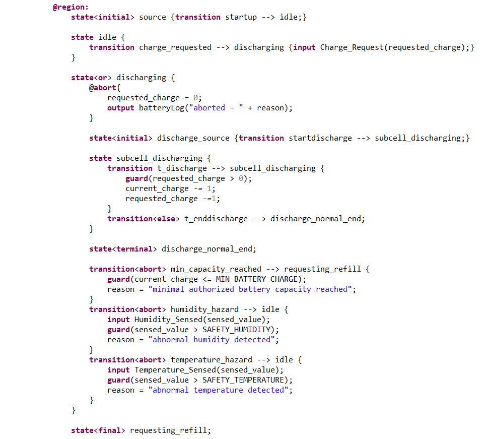
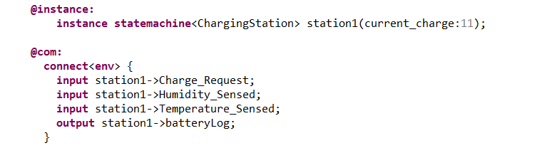
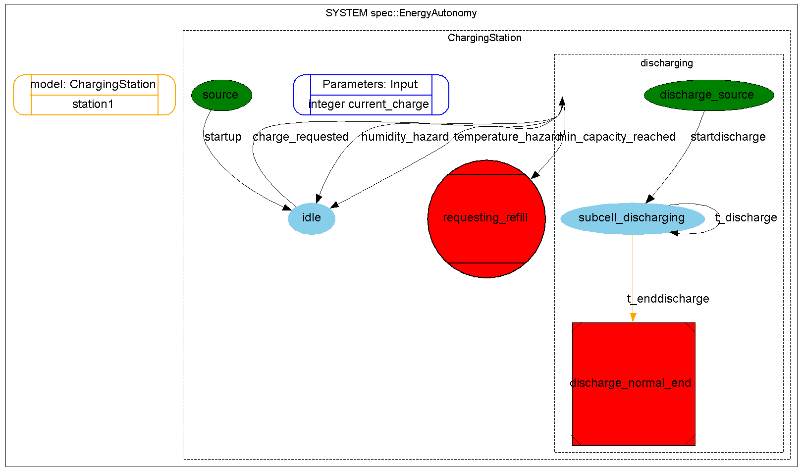
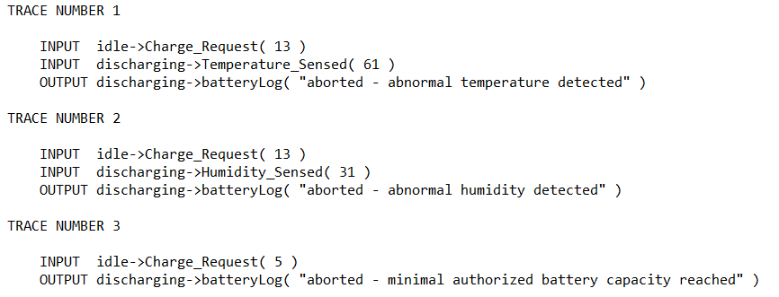
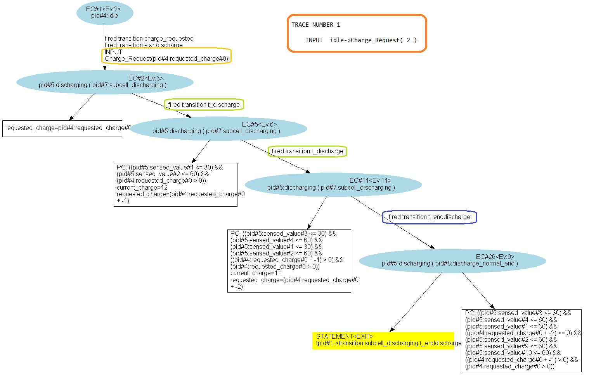

When we leave a state with a normal transition, the instruction block inside the "@disable{...}" activity primitive of the state is executed.
When we leave a state with an abortion transition, instead of the "@disable{...}" primitive, it is the the instruction block inside the "@abort{...}" primitive that is executed.
As abortion transitions are only useful in composite states, you should define the "@abort{...}" activity primitive only in composite states.
We'll consider an electrical charging station for motorized vehicles. As it is out in the wilderness, it relies on a high capacity battery. Users can come and charge their vehicles. However, the charging process can be disrupted for several reasons :
This is a perfect example to showcase the "@abort{...}" activity primitive and abortion transitions.
We'll start by defining some constants of the system :
Then the properties of the statemachine "ChargingStation" (here I used the model-instance paradigm) :
Then, we'll define the state and substates of the "ChargingStation" :
The "discharging" composite state is the heart of this example as it is this state that we're using to showcase the "@abort{...}" primitive. While the charging process occurs for the user, the battery is discharging i.e. it loops on the "subcell_discharging" substate. Three abortion transitions are defined in the parent "discharging" composite state; one for each of the three reasons mentioned earlier. Each one of those transition is guarded by an adapted condition and has the priority of evaluation over the loop on "subcell_discharging" if this condition is met. The declaration of the abortion transitions is made by using the "abort" flag such as above. When evaluating the abort transition, the code within the "@abort{...}" activity primitive is evaluated. Here, the "ChargingStation" will produce an output explaining the reason of the abortion.
Finally, we create an instance of "ChargingStation" (here I used a small value for "currrent_charge" so that the "min_capacity_reached" transition can be reached quickly) and we connect the different ports to the environment :
The system's graph is the following :
When executing diverisy's "Transition Coverage" feature, we can find input arguments that allow to cover the abortion transitions :
And also the "t_enddischarge" transition :
